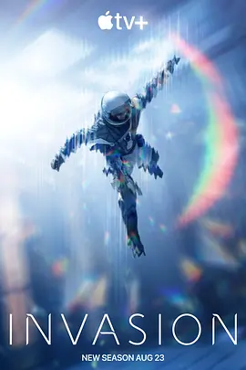

5.7
入侵 第二季
Invasion Season 2
2023
美国
评分 5.7
导演:
阿利克·萨哈罗夫
演员:
格什菲·法拉哈尼 / 沙米尔·安德森 / 忽那汐里 / 比利·巴瑞特 / 艾奇·罗伯逊
类型:
剧情,悬疑,科幻
剧情简介
外星来袭后的数月，人类尚未从最初的混乱中站稳脚跟，更激烈的攻势便再次降临。城市的废墟仍在冒烟，边境警报昼夜不停，全球通讯被撕裂成无数断点。幸存者们在断壁残垣间尝试维持秩序，却始终无法预测下一次袭击会从何处落下。第二季的故事围绕几条线索展开：有的人被迫携家带口踏上逃亡之路，有的人加入临时武装力量守卫残存的据点，还有人试图用科学方法理解敌人的意图。镜头在火光与阴影交织的场景间穿梭：战斗机追踪未知目标时留下的白色尾迹、废弃学校中传来奇怪脉动声、地表被巨力扭曲后的裂纹、夜间营地里士兵屏息等待的神情，都让这场对抗显得更为接近“绝境”。角色们的情绪也在动荡中不断变化——恐惧、愤怒、希望与责任交织，一次次将他们推向自己从未设想过的选择。与第一季相比，这一季的步伐明显加快，冲突更直接，也更残酷。每一场战斗都像是在争夺最后一点生机，而角色之间的信任与怀疑同样牵动着局势的走向。敌人不断演化，而人类试图以顽强与智慧回应这场全面的战争。